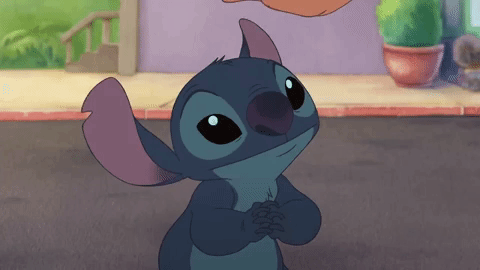
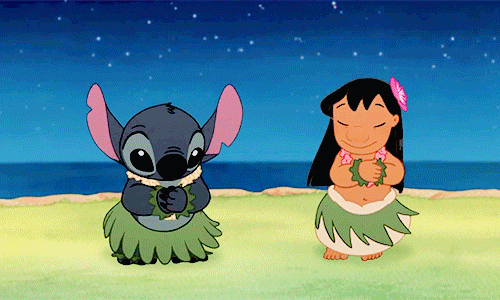
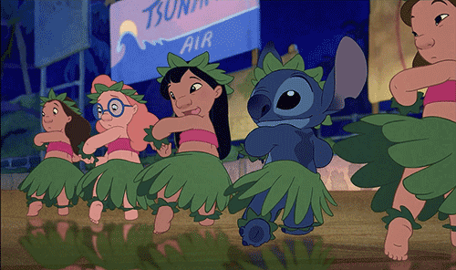

Лило — это маленькая девочка, живущая на Гавайах. Она сирота и живет вместе со своей старшей сестрой Нани. Лило любит всех животных, но больше всего она подружилась с собачкой по имени Стич, которая на самом деле совсем не собачка, а — замаскированный инопланетянин. Дело было так: некоего преступника по имени Стич переправляли в интергалактическую тюрьму, но ему удалось ускользнуть и приземлиться на Земле, где он и встретил Лило. И тут Стич прикинулся собакой, дабы скрыться от преследования интергалактической полиции. Теперь Стич учится тому, чему не был обучен — заботе о других…
Стич помогает Лило пойти по стопам ее матери в подготовке к большому танцевальному конкурсу на острове. Жизнь кажется идеальной, пока Стич не попадает в затруднительное положение, и тогда все идет наперекосяк. И вот пришла пора Лило, Нани, Джамба и их всей большой семье последовать законам «Оханы» и прийти на помощь маленькому веселому другу.
Лило и Стичу дана задача собирать всех остальных экспериментов Джамбы, делая из плохих хороших, и находить им новые дома. Тем временем капитан Ганту и его ленивый партнер, эксперимент 625, пытаются захватить эксперименты для доктора Хомяксвиля.
Жизнь девочки из Гавайских остров с добрым именем Лило очень изменилось после того, как в друзьях у нее появился пришелец из космоса. Стич - это симпатичный синий пришелец, который способен разрушать все вокруг. Лило, обуздала вспыльчивый характер Стича и теперь они неразлучные друзья. После бурных приключений, которые пережили друзья, они живут в тропическом рае и наслаждаются жизнью. Старые враги Стича и его друзей не собираются сидеть, сложа руки. Оказывается, что Стич один из многих зверков, созданных с помощью генетики. Космические злодеи хотят вернуть себе остальных братьев Стича. Где они, знает только гениальный Джамба, один из друзей Лило и Стича..